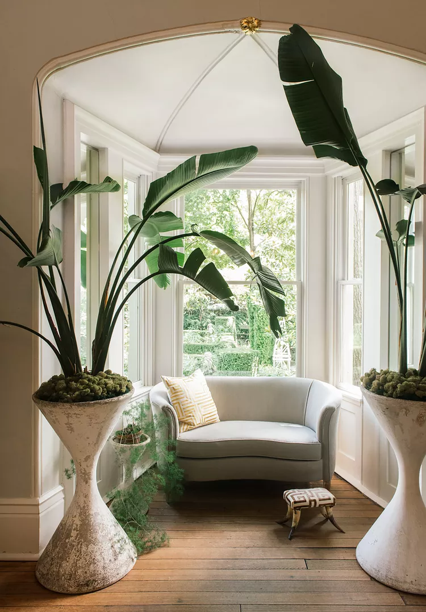
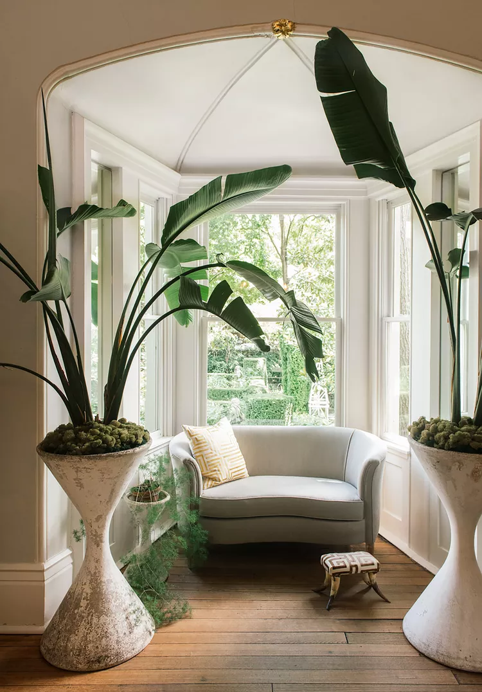

BIOPHILIC
Biophilic interior design is an approach that seeks to connect people with nature by incorporating natural elements and principles into interior spaces. It recognizes the innate human desire to be in contact with nature and aims to enhance well-being, productivity, and overall satisfaction.
The core principles of biophilic design revolve around creating a connection with nature through three main elements: direct connection, indirect connection, and the use of nature analogues.
Biophilic design aims to create environments that promote well-being and productivity. Studies have shown that exposure to natural elements or views of nature can reduce stress, enhance cognitive function, and improve mood. Incorporating biophilic elements in interior spaces can lead to increased creativity, improved concentration, and a general sense of calm and happiness.
In addition to the psychological benefits, biophilic design also considers sustainability. Using natural, sustainable materials, incorporating energy-efficient lighting, and designing spaces that encourage natural ventilation are some of the ways biophilic design promotes environmental consciousness.
IMAGES: Charlotte Taylor and Nicholas Preaud imagine ‘Casa Atibaia’, a modernist “jungle home” – ©Charlotte Taylor/Nicholas Préaud (left) GABRIELA HERMAN (right)
READ MORE
.jpg) 
